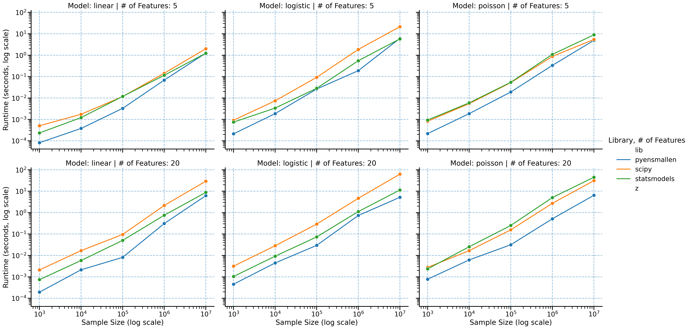
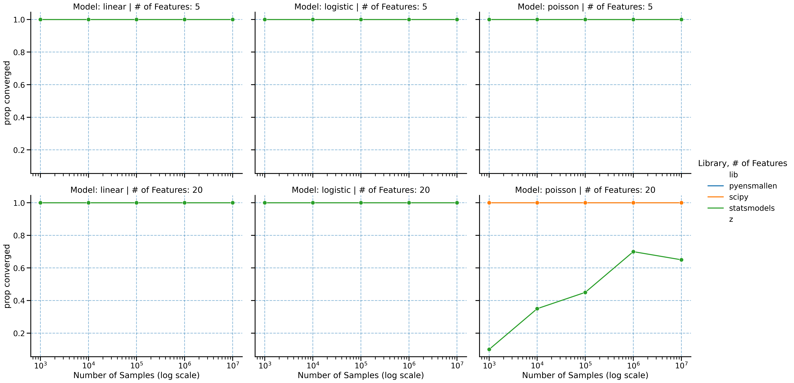

| Library | Model | Samples | Features | vs SciPy | vs statsmodels |
|---|---|---|---|---|---|
| 9 | Linear | 10,000,000 | 20 | 11.53 | 3.74 |
| 19 | Logistic | 10,000,000 | 20 | 14.60 | 4.55 |
| 29 | Poisson | 10,000,000 | 20 | 13.39 | 30.54 |
Benchmarks
pyensmallen is built for the regime where mainstream Python estimation stacks start to drag: large samples, repeated model fits, and inference workflows that require resampling or repeated solves.
Across linear, logistic, and Poisson regression, the basic pattern is consistent: as the problem gets larger, pyensmallen tends to pull away from SciPy and statsmodels rather than merely keeping pace.
Headline results
At 10 million observations and 20 features:
That is the practical story. The time saved on point estimation can be spent on bootstrap inference, specification search, cross-validation, and sensitivity analysis.
Runtime scaling

Benchmarks span sample sizes from 1,000 to 10,000,000 observations and both low- and moderate-dimensional settings. The slope separation matters more than any single point estimate: the larger the problem, the larger the payoff from using a faster optimizer stack.
Convergence behavior

Speed only matters if the optimizer still lands on the same solution. The convergence comparisons show that the runtime gains are not coming from a loose stopping rule or low-quality fit.
Full benchmark grid
The full grid below reports multiplicative speedups relative to SciPy and statsmodels across all benchmark configurations.
| Library | Model | n_samples | n_features | scipy_speedup | statsmodels_speedup |
|---|---|---|---|---|---|
| 0 | Linear | 1000 | 5 | 5.08 | 2.07 |
| 1 | Linear | 1000 | 20 | 12.02 | 6.72 |
| 2 | Linear | 10000 | 5 | 3.08 | 2.22 |
| 3 | Linear | 10000 | 20 | 5.36 | 3.64 |
| 4 | Linear | 100000 | 5 | 2.29 | 2.87 |
| 5 | Linear | 100000 | 20 | 8.93 | 4.07 |
| 6 | Linear | 1000000 | 5 | 4.70 | 2.68 |
| 7 | Linear | 1000000 | 20 | 18.02 | 5.63 |
| 8 | Linear | 10000000 | 5 | 5.57 | 3.05 |
| 9 | Linear | 10000000 | 20 | 11.53 | 3.74 |
| 10 | Logistic | 1000 | 5 | 3.42 | 2.45 |
| 11 | Logistic | 1000 | 20 | 9.53 | 4.90 |
| 12 | Logistic | 10000 | 5 | 4.13 | 2.14 |
| 13 | Logistic | 10000 | 20 | 6.37 | 2.90 |
| 14 | Logistic | 100000 | 5 | 1.26 | 0.76 |
| 15 | Logistic | 100000 | 20 | 8.57 | 5.43 |
| 16 | Logistic | 1000000 | 5 | 4.10 | 2.41 |
| 17 | Logistic | 1000000 | 20 | 8.82 | 3.43 |
| 18 | Logistic | 10000000 | 5 | 11.22 | 2.21 |
| 19 | Logistic | 10000000 | 20 | 14.60 | 4.55 |
| 20 | Poisson | 1000 | 5 | 4.70 | 3.96 |
| 21 | Poisson | 1000 | 20 | 5.10 | NaN |
| 22 | Poisson | 10000 | 5 | 3.59 | 4.20 |
| 23 | Poisson | 10000 | 20 | 3.60 | 2.09 |
| 24 | Poisson | 100000 | 5 | 0.76 | 0.97 |
| 25 | Poisson | 100000 | 20 | 8.25 | 39.57 |
| 26 | Poisson | 1000000 | 5 | 0.66 | 0.92 |
| 27 | Poisson | 1000000 | 20 | 4.60 | NaN |
| 28 | Poisson | 10000000 | 5 | 0.35 | 0.50 |
| 29 | Poisson | 10000000 | 20 | 13.39 | 30.54 |
Fastest method by configuration
| Model | n_samples | n_features | Library | |
|---|---|---|---|---|
| 0 | Linear | 1000 | 5 | pyensmallen |
| 1 | Linear | 1000 | 20 | pyensmallen |
| 2 | Linear | 10000 | 5 | pyensmallen |
| 3 | Linear | 10000 | 20 | pyensmallen |
| 4 | Linear | 100000 | 5 | pyensmallen |
| 5 | Linear | 100000 | 20 | pyensmallen |
| 6 | Linear | 1000000 | 5 | pyensmallen |
| 7 | Linear | 1000000 | 20 | pyensmallen |
| 8 | Linear | 10000000 | 5 | pyensmallen |
| 9 | Linear | 10000000 | 20 | pyensmallen |
| 10 | Logistic | 1000 | 5 | pyensmallen |
| 11 | Logistic | 1000 | 20 | pyensmallen |
| 12 | Logistic | 10000 | 5 | pyensmallen |
| 13 | Logistic | 10000 | 20 | pyensmallen |
| 14 | Logistic | 100000 | 5 | statsmodels |
| 15 | Logistic | 100000 | 20 | pyensmallen |
| 16 | Logistic | 1000000 | 5 | pyensmallen |
| 17 | Logistic | 1000000 | 20 | pyensmallen |
| 18 | Logistic | 10000000 | 5 | pyensmallen |
| 19 | Logistic | 10000000 | 20 | pyensmallen |
| 20 | Poisson | 1000 | 5 | pyensmallen |
| 21 | Poisson | 1000 | 20 | pyensmallen |
| 22 | Poisson | 10000 | 5 | pyensmallen |
| 23 | Poisson | 10000 | 20 | pyensmallen |
| 24 | Poisson | 100000 | 5 | scipy |
| 25 | Poisson | 100000 | 20 | pyensmallen |
| 26 | Poisson | 1000000 | 5 | scipy |
| 27 | Poisson | 1000000 | 20 | pyensmallen |
| 28 | Poisson | 10000000 | 5 | scipy |
| 29 | Poisson | 10000000 | 20 | pyensmallen |
Why this matters
- Linear regression is especially notable because
statsmodelsuses a closed-form estimator, yetpyensmallenremains highly competitive and often faster at scale. - Logistic regression shows the cleanest large-sample advantage relative to SciPy and statsmodels.
- Poisson regression has the most uneven competitor behavior, which makes
pyensmallen’s combination of speed and stable optimization especially useful. - In practical terms, these runtimes make bootstrap-based inference much more realistic on large datasets.